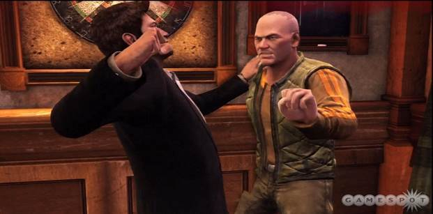
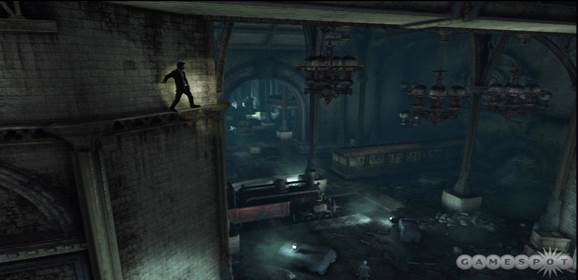

Is it possible to have your expectations raised too high? Uncharted 2: Among Thieves delivered a monumental leap over the first game in the series, and it might be easy to fall into the trap of assuming the same advancements would take place in every subsequent release. If that's your state of mind going into Uncharted 3: Drake's Deception, you might walk away slightly disappointed. But that's not a fair response. Though the third entry in this treasure-hunting franchise offers a similar experience to its revered predecessor, it's no less magical. Just about every element showcases the care and craftsmanship you would expect from the series. Combat is even more versatile than in previous entries, combining incredible shooting encounters with advanced hand-to-hand takedowns set in lavishly designed areas. When you need a break from the taxing physical endeavors, thoughtful puzzles allow you to explore your more contemplative side. And these two elements are punctuated by exhilarating set-piece events that leave you gasping. Uncharted 3: Drake's Deception is another superb entry in Nathan Drake's ongoing quest to find the world's many lost treasures.
Once again, Nathan Drake is in search of lost treasure in a mysterious land. The story encompasses many of the same tropes from previous games--deception, twists, camaraderie--though the nuts and bolts of the plot have never been one of Uncharted's strong points. Rather, it's the realistic portrayal of characters--their lively back-and-forth discussions and snide jokes--that give you a reason to care about the tale. Drake, Sully, and the supporting cast sport detailed animation that makes them almost look real, and their playful dialogue further cements this image. Tempers flare, threats are made, and you can feel the tension during heated moments. But these lifelong friends always make up, and it's their believable relationships that make it so easy to become invested in their struggles.
When you picture Uncharted, you may think of plundering ancient tombs or throwing as many grenades as you can manage in bombastic sequences. But the opening of Drake's Deception eschews the larger-than-life action the series is known for in favor of an old-fashioned bar brawl. This is where the new animations that have been incorporated into fisticuffs are apparent as you wrestle with a platoon of aggressive men in a confined place. Shoving a burly dude into the bar while you pummel his face or grabbing a stray bottle to crash over someone's head conjures images of Patrick Swayze handling business in Road House, and the controls are precise enough to make it possible to manage an approaching group without getting your face beaten. Ultimately, these instances where you're forced to take matters into your own hands are the weakest aspect of the game because your freedom is so limited, but that's not to say they're boring. There's a satisfying rhythm to throwing fists while avoiding counters, and you have enough flexibility to move around that you don't feel like you're just performing.

As much fun as it may be to bash in a man's head with a wooden chair, it can't match the thrill of beating a man with your fists when he's sporting an assault rifle. There are segments where you have to fistfight in Drake's Deception, but there are other times when you're in a battle for your life and you can use any weapon you want to stay alive. Thanks to the incredibly impactful animations of a hand-to-hand assault, it's fun to put aside the bullets and explosives to focus on getting your hands dirty instead. Being sneaky certainly helps. Snapping a man's neck before he can turn around or just shoving someone clear off a building is immensely rewarding. But there are other times when stealth doesn't work, and you find yourself grappling, feinting, and punching below the belt, while bullets fly and enemies scream death threats at you. Particular animations make these encounters a special treat. You may grasp the barrel of your gun and swing at someone's head with a metal uppercut or elbow a foe in the neck like a wrestler suffering from roid rage, and it's hard to contain your joyous laugh. There are times when you run out of bullets and fighting with your fists is the only way to go. Once you finish off your foe, a slow motion moment in which Drake snatches your enemy's discarded gun in midair adds a fitting end to the fight.
Of course, you don't have to go toe-to-toe if you'd rather not. The beauty of Uncharted's combat is that you can dispatch foes in a variety of ways, and all of them feel incredibly empowering. The key is the expertly designed levels. Drake's Deception is a cover-based, third-person shooter; thus, chest-high walls populate many of your encounters. But those familiar structures aren't used as a crutch here. Verticality gives you the option to climb around like a gun-toting monkey if you prefer, getting the drop on lackadaisical foes. If a man with a rocket launcher is forcing you to hunker behind a piece of debris, fear not; you can smoothly leap from cover, shimmy up a nearby wall, and sprint pell-mell across a rooftop. Grab a sniper rifle on the way if you want to handle him from afar or a shotgun if you'd like to pop him right in the head. Toss grenades at the group of enemies hiding by that well, man the turret once you finish off its previous operator, or sprint past everyone until you make it to the door that marks your safety. Versatile level design lets you choose how to go about killing your pesky foes in Drake's Deception, and rock-solid controls ensure every action you want to perform can be pulled off without any hesitation.

Nathan found the perfect hiding place: right in a spotlight.
If you're feeling sluggish and just want to use your gun for a while, doing so is a perfectly valid alternative to the high-flying adventuring. The mechanics in Drake's Deception have been refined even further from the previous game. No matter which gun you grab, you can target weak points with ease, and enemies recoil when you prick their flesh with searing-hot bullets. Drake's Deception offers so many different ways to take down foes that you might think it falls into the camp of jack-of-all-trades, master of none. But that's not true at all. If you take things slowly--crouch behind cover only risking your neck when the opportunity presents itself--you have just as much of a chance to succeed as someone who makes use of Drake's agility. And you can have just as much fun, too. The weapons are a blast to use. Landing a headshot from across the map with a sniper rifle is eminently satisfying, as is taking out a gunner with a sure blast from a shotgun. You can easily keep an enemy off balance with a fast-shooting assault rifle or knock a grenade right out of someone's hand with a steady pistol. Ample ammunition lets you focus on the fun of firing rather than scrounging for extra bullets, so you can stick with your favorite weapon if you want or mix things up after every fight.
Uncharted is at its best when the difficulty rises. During many of the game's fights, you can relax and dispose of foes with easy grace. Though this is certainly fun, being forced to play smartly makes things even more exciting. Enemies aren't scared to charge at you when you're hiding behind cover. When you see someone sprinting in your direction, you have to decide quickly if you're going to run or fight, and that decision is frequently the difference between life and death. Dealing with flanking enemies while a sniper is keeping you pinned down forces you to act with determination, and though you may die repeatedly in certain sections, it rarely feels like the game is at fault. However, not every aspect of the combat is flawless. There are times when the AI forgets you're trying to kill them and they just stand around, taking in the impressive view. On the other end of the spectrum, your location may be uncovered when you're trying to be sneaky, even if you stay out of sight. There's also a small quirk with the hand-to-hand killing animations. One of these involves pulling the pin from an enemy's grenade. This looks painfully delightful, but if this randomly triggered event happens at the wrong time, you could be stuck with nowhere to flee.
.